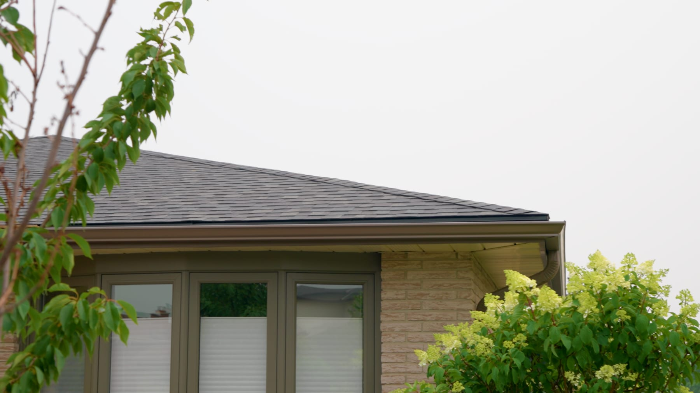

Monthly payment options through Financeit — so cash flow isn't the thing that decides how your roof gets built. Check what you qualify for without committing to the work.
Spread a full replacement over fixed monthly payments
Checking your options doesn't commit you to the job
A Canadian home-improvement lender — you apply with them, not us
Measured, written, and free whether you finance or not
The roofs we get called back to early are rarely the ones where somebody hired the wrong contractor. They're the ones where a budget forced a compromise at the quoting stage — and every one of those compromises is invisible the day the job finishes.
Shingles laid over the old ones instead of a full tear-off. The existing metal flashings reused rather than replaced. Ventilation left exactly as it was, even when it's the reason the last roof aged early. Each of those saves money on the day. Each of them is a place the roof will fail first.
There's a warranty consequence too, and it's the one most homeowners don't hear about until it matters: CertainTeed's own installation specification states that a lay-over or roof-over installation does not qualify for extended warranty coverage. The saving on the day can quietly cost you the warranty on the whole roof.
Financing exists so that timing isn't what makes those calls for you. It doesn't make the roof cheaper — it changes when you pay for it. We'd rather do the job properly once and have you pay for it over a couple of years than build a roof we both know is a compromise.
Financing is arranged through Financeit, a Canadian home-improvement lender. Approval, rates and terms are determined by Financeit and are subject to their credit criteria.
We'd rather set this out plainly than have you find the limits of it halfway through an application.
What we can tell you: financing is available on roof replacements, applying costs nothing, checking your options doesn't commit you to the work, and your written estimate is free and stays free either way. Financing never changes the price or the scope of what we build — the roof is the same roof.
What Financeit decides: whether you're approved, your interest rate, the term length, and your monthly amount. All of that depends on your credit profile and the size of the project. That's why you won't find a rate or a sample monthly payment anywhere on this page — any number we published would be wrong for most of the people reading it, and a payment figure that turns out not to apply to you is worse than no figure at all.
What we never see: your credit file. We don't run the check, we don't receive your financial information, and if an application isn't approved we aren't told why. That's between you and the lender, which is how it should be.
These are two different steps, and it's worth knowing which one you're on.
Checking what you qualify for is the shorter first step — basic details, to see what's available to you. A full application is the formal credit application that follows if you decide to go ahead.
Financeit tells you which step you're on and what it involves — including any effect on your credit report — before you enter your information. That disclosure comes from the lender and can change, so read it on their page rather than take our summary of it. We're not going to make a claim about your credit report on somebody else's behalf.
If you'd sooner talk to a person than start an online form, call or text and ask. We'll walk you through what's involved without you applying for anything.
It usually makes sense for a full replacement, or for a replacement bundled with the related work that's cheapest to do while the roof is already open — skylights, ventilation corrections, eavestrough. Doing those at the same time costs far less than coming back for them separately.
It usually doesn't for a small repair. A reseal, a handful of shingles, one flashing detail — those are small enough that financing them rarely makes sense, and we'll tell you so instead of putting a payment plan in front of you.
And if your roof has years left in it, we'll say that too. Financing is not a reason to replace a roof early. If a repair is the right answer, that's the answer you'll get from us — the fact that we could finance a replacement doesn't change what your roof actually needs.

Yes. We offer monthly payment options on roof replacements through Financeit, a Canadian home-improvement lender. You apply directly with Financeit rather than with us, which means your financial details go to the lender and not to your roofer. Your estimate stays free either way, and choosing to pay outright doesn't change the price or the scope of the work.
No. Checking what you qualify for and agreeing to have your roof done are two separate decisions, and you can stop after the first one. You are not committed to booking the job, and we don't treat a financing enquiry as acceptance of an estimate. If you decide to pay another way, or not to proceed at all, that's the end of it.
Financeit sets those, not us. The rate, the term length and your monthly amount depend on your credit profile and the size of the project, so any figure we published here would be wrong for most people who read it. Financeit shows you your actual amount, term and monthly payment before you agree to anything. We'd rather point you at their numbers than quote an example payment that doesn't apply to your roof.
Financeit states what each step involves before you enter any information, including any effect on your credit report. Because that disclosure comes from the lender and can change, we won't paraphrase it here — read it on their page as you go. What we can tell you is that nothing on our side runs a credit check: we don't pull your credit, we don't see your credit file, and we're not told the reason if an application isn't approved.
Financing makes the most sense on a full replacement, or on a replacement combined with related work like skylights, ventilation or eavestrough done while the roof is open. For a small repair — a reseal, a handful of shingles, a single flashing detail — it usually isn't worth financing, and we'll say so rather than sell you a payment plan you don't need.
Yes, and it's free. Until the roof is measured, nobody knows the amount, so applying first means guessing at a number. We measure the roof, check the decking, flashing and ventilation, and give you a specific figure in writing. Then you know what you'd actually be financing, and you can decide whether you want to.
Our real range, the eight factors that move it, and why some quotes come in lower.
ServiceThe full scope of a proper replacement, and why we won't roof over existing shingles.
Get StartedTell us about your property and we'll follow up as quickly as possible.
Free, written, measured — then you'll know what you're deciding about. Serving Kitchener, Waterloo, Cambridge, Elmira, Guelph, and surrounding areas.